orOS F-Droid repository
Το αποθετήριο F-Droid του orOS · 35 apps · free and open source (MIT), free forever

- Install F-Droid, Droid-ify or Obtainium.
- On your phone, tap the button below, or scan the QR code with the app.
- Install any orOS app; updates then come by themselves.
Add the orOS repository
Στο κινητό πάτα το κουμπί ή σκάναρε τον κωδικό QR από το F-Droid ή το Droid-ify. Μετά εγκατέστησε όποια εφαρμογή του orOS θέλεις· οι ενημερώσεις έρχονται μόνες τους.
Address: https://koulaxizis.github.io/oros-fdroid/repo
Fingerprint (SHA-256): 2A066758DF27F6AFDF6D96F72D575E3E04844B9F85A22A54B7F2C03905A11846
- orOS
A whole desktop in your pocket: over 100 offline apps and games in one place - orOS Notes orOS Σημειώσεις
Private notes that work offline - orOS Calendar orOS Ημερολόγιο
A private calendar that works offline 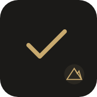
orOS To-Do orOS Εργασίες
Tasks and lists, offline and private- orOS Passwords orOS Κωδικοί
An encrypted password vault that stays on your device 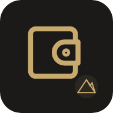
orOS Budget orOS Έσοδα & Έξοδα
Income and expenses, offline and private- orOS Games orOS Παιχνίδια
37 classic games in one app: daily puzzles, chess, solitaire - orOS Bookmarks orOS Σελιδοδείκτες
Save links in folders, tag them, keep readable copies and find them fast - orOS Contacts orOS Επαφές
Address book with labels, birthdays, keep-in-touch reminders and duplicate merge 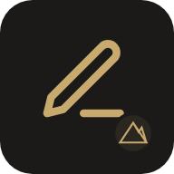
orOS Writer orOS Κειμενογράφος
Word processor with tabs, tables, footnotes, comments and Word/PDF export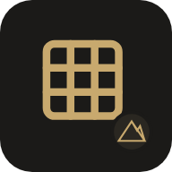
orOS Spreadsheet orOS Υπολογιστικά φύλλα
Spreadsheet with 100+ functions, charts, several sheets and Excel/Calc files- orOS Kanban orOS Πίνακες Kanban
Kanban boards: drag cards across columns, with labels, due dates and subtasks - orOS Mind Map orOS Νοητικός χάρτης
Mind maps that stay tidy: branches, colours, icons, outline view and presenting - orOS Wiki
Your own wiki: linked articles with contents, categories and full history 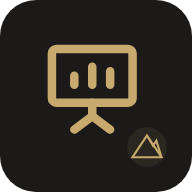
orOS Slides orOS Παρουσιάσεις
Make presentations with themes and layouts, and present with speaker notes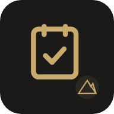
orOS Habits orOS Συνήθειες
Build routines: tick habits day by day, with streaks, strength and stats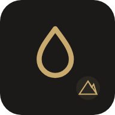
orOS Water orOS Νερό
Log every glass with one tap and watch your daily water goal fill up- orOS Diary orOS Ημερολόγιο μιας πρότασης
One sentence a day, with the same date from past years shown under it - orOS Mood orOS Διάθεση
Log how you feel in seconds and discover patterns in your mood over time - orOS Workouts orOS Προπόνηση
Training log: follow a program, tick your sets, track records and progress - orOS Health orOS Υγεία
Log blood pressure, weight, sugar, sleep and medicines, with charts and reports - orOS Cycle orOS Κύκλος
Private period tracker with predictions, symptoms and an optional fertile window 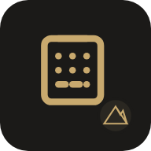
orOS Calculator orOS Αριθμομηχανή
Calculator with scientific, graphing, programmer and finance modes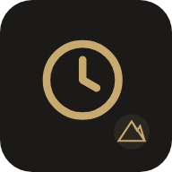
orOS Time orOS Ώρα
Clock, world clock, alarms, timers, stopwatch, Pomodoro and a stage timer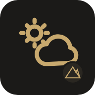
orOS Weather orOS Καιρός
Forecast, rain in the next 2 hours, official warnings, air quality and pollen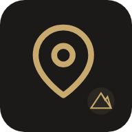
orOS Maps orOS Χάρτες
OpenStreetMap maps with routes, public transport, navigation and GPX tracks- orOS Reader orOS Αναγνώστης
RSS, Atom and JSON feed reader with folders, tags, search and offline reading - orOS Mail orOS Αλληλογραφία
Read and send email from any IMAP account, with rules, snooze and OpenPGP 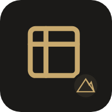
orOS Files orOS Αρχεία
Your private disk: folders, previews, search, ZIP files and Dropbox- orOS Podcasts
Follow podcasts, build an Up next queue and download episodes to play offline 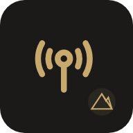
orOS Radio orOS Ραδιόφωνο
Thousands of internet radio stations, with favourites, recording and alarms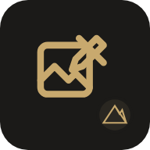
orOS Photo Lab orOS Εργαστήριο εικόνας
Edit photos with layers, masks, selections, brushes, filters and adjustments- orOS Invoices orOS Τιμολόγια
Invoices, receipts and credit notes with VAT, numbering, PDF and payments - orOS CRM orOS Πελάτες
A small customer book: customers, contacts, follow-ups and a deal pipeline 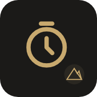
orOS Timesheet orOS Ώρες εργασίας
Track work time per project and client, with timers, weekly view and reports
More about orOS: useoros.online · source: github.com/koulaxizis/oros · support: Ko-fi